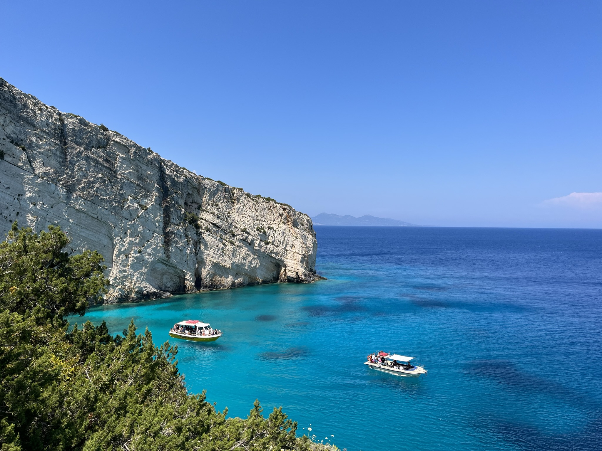
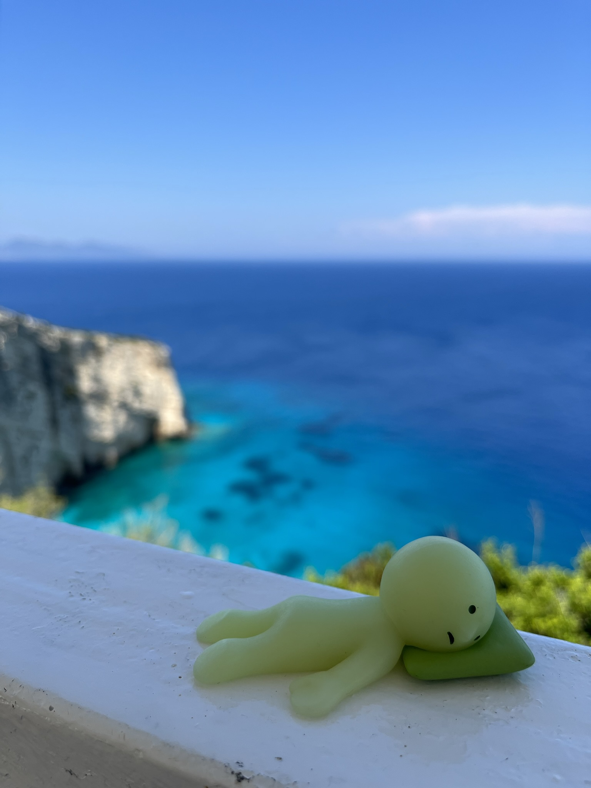
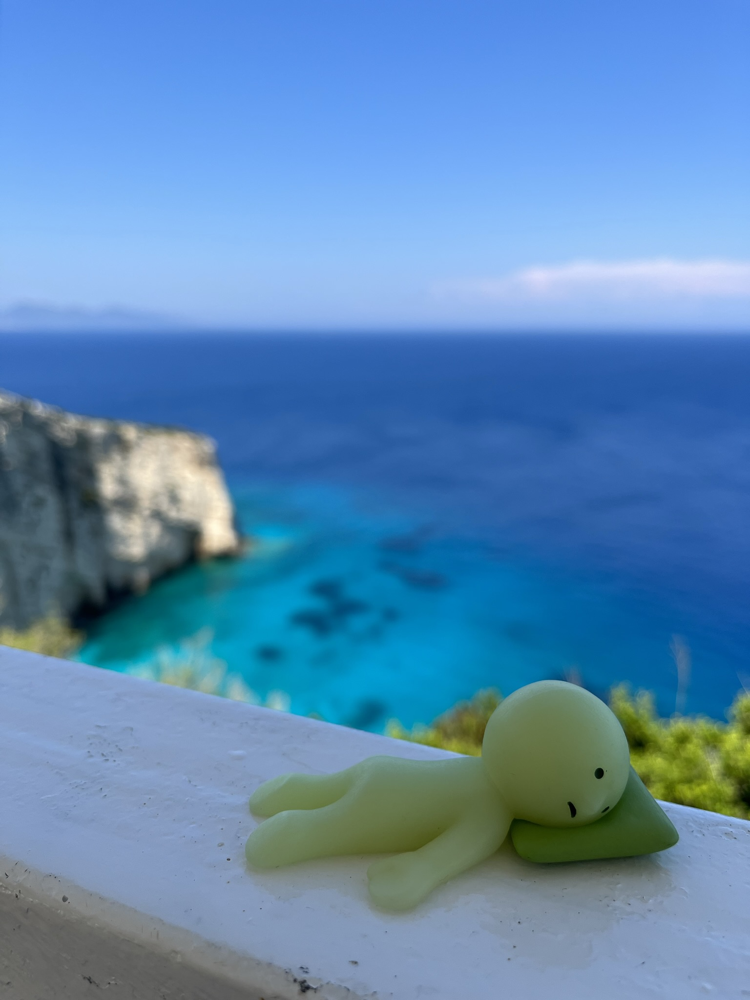
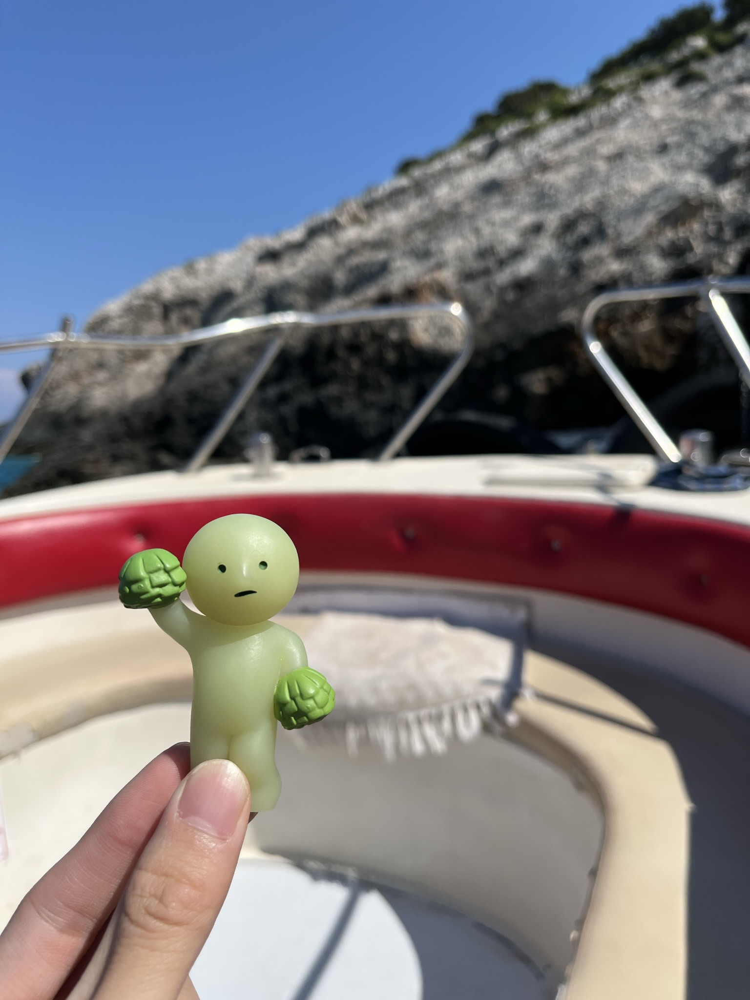
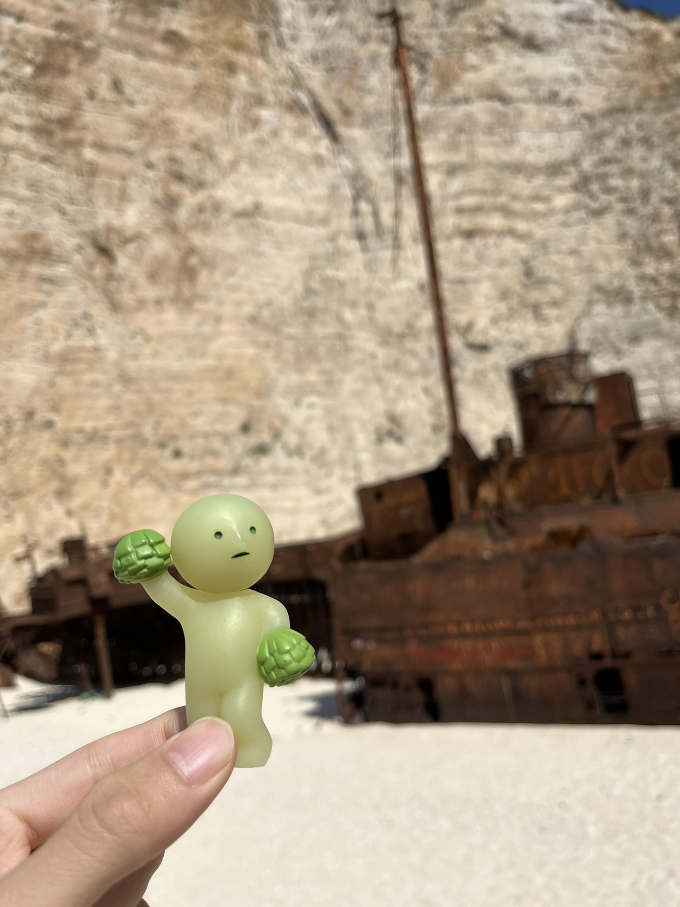
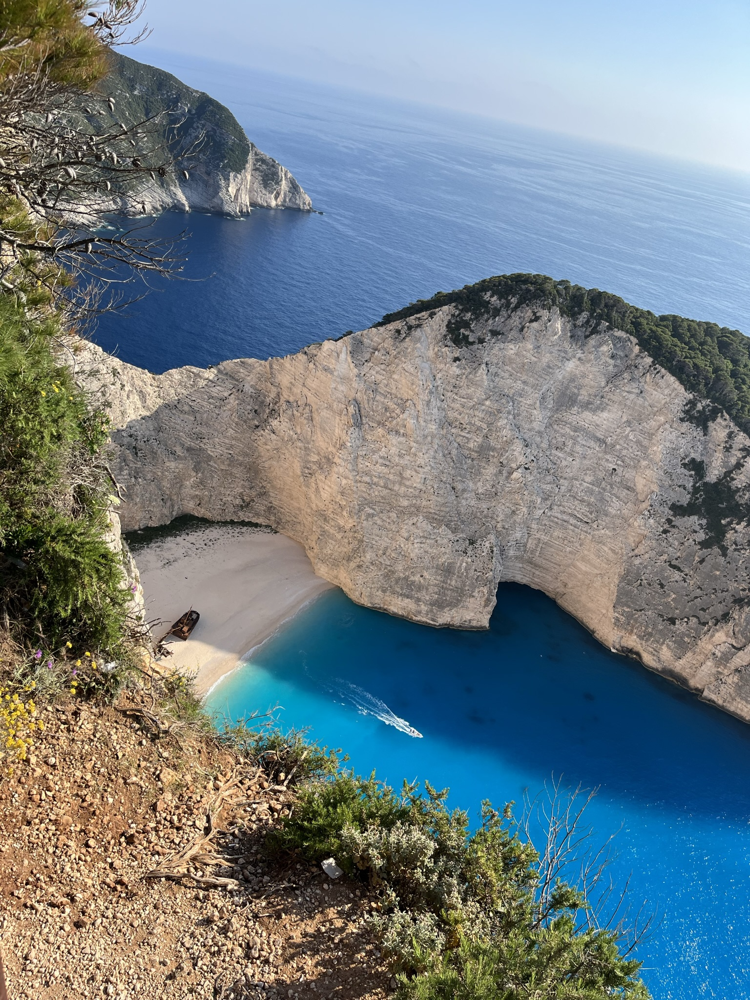

hi mom! smike here again. today was a long day but definitely my favorite so far! we had to leave way early for the airport at 5:30. being in another country’s airport is a rly cool experience, although i couldn’t find a water fountain for the life of me :(
finally we got on our plane and off we went! it was a rly short 45 min flight to the island of zakynthos but it was rly pretty! smark was in love hehehe
the flight was pretty empty and the airport was so small that we literally went from landing to the car rental within 5 minutes. we got our car and before we knew it we were at our villa for the next three days! the host showed us around and wow! it was three stories with an amazing pool and view
gramps seemed to be enjoying himself hehe

we then went and got lunch at a taverna in keri, which is the closest town to our villa and just a 10 minute walk away. the food was great as usual! we got a whole rabbit cooked w tomatoes, pita gyros and butter beans again, and the crispiest lamb chops i’ve ever had (in a very very good way)
then we started our drive towards the blue caves at the north of the island. along the way, we saw beautiful ports, quaint fruit juice stands along the highway, and soooo many weird looking olive trees haha
finally, we reached the north part of the island. I wouldn’t say the island is huge so the drive was only an hour long. this was my first time truly seeing the greek seas up close and it’s so unbelievably blue!
 

we decided to take a private boat tour to see the blue caves and the famous shipwreck beach up close. the boat went so fast and the wind felt so nice against the sun. our skipper was also very skilled and able to bring us through tight arches and into the caves themselves. a couple times they stirred the water with poles and made bubbles, and that made the water even more pure blue, exactly the shade of dad’s favorite color


after we visited all the caves, the boat went the other way towards shipwreck beach. by now the wind picked up, so it was super bumpy for the unexpectedly long 25 min ride there. here’s a funny clip of smatt being uncomfy :D

also! apparently a rly famous scene in descendants of the sun was filmed at this beach! we only found out when we got home, or else we definitely would’ve reenacted it sigh
the beach itself was actually rly pretty! there were small white rocks instead of sand so it kinda hurt to walk but the view definitely made up for it. the ship itself was wrecked as advertised and looked super cool on its side. smatt got a nice pic but the rest of us just chilled since it’s our first time ever being on a beach!
later on we were able to stop by the overhead view point which was super cool but confirmed that we made the right choice to take the boat there
when we got back to the car, we started to make our way home. we stopped by a super old olive tree and bought some oil, and then got some rly yummy pita gyros from the hot guy at the street food cart smatt was gracious enough to be our decoy heheh dad is a big fan but auntie said that he looked too much like her old coworker smh
gramps then made mussel noodles and some tomato soup to finish out dinner which actually looked p good!
funny story, we somehow left our charger port in athens so we literally have no way to charge everything tonight… plus dad is stressed about the mavs, who play game 7 at 3am our time, which isn’t helping ahhh
miss you, mom!
love,
smike (and others)
p.s. we only ate the cheese ones and they were quite meh.